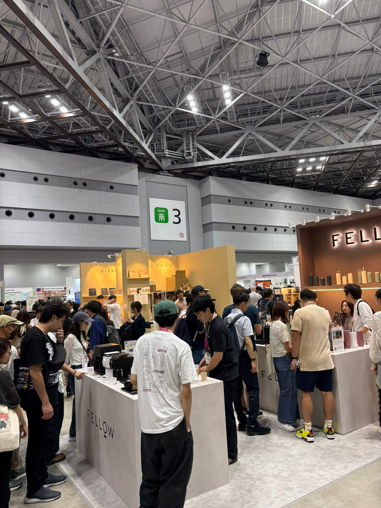

Coffee Markets & Events
Explore the World's Most Promising Coffee Markets
Select a market to learn about the local coffee opportunity and the trade events currently open for international exhibitor participation.

Asia · Trade Event
Singapore
A regional hub for specialty coffee and café industry trade, connecting producers and suppliers across Southeast Asia.
View market & event
Asia · Trade Event
Japan
One of the world's most sophisticated coffee markets, Japan offers unrivalled access to premium buyers and specialty roasters.
View market & eventMiddle East · Trade Event
Saudi Arabia
The fastest-growing coffee market in the Arab world, backed by Vision 2030 and a young, brand-aware consumer base.
View market & event